16-825 Assignment 4: Multi-View Transformers
Data preprocessing · Mini-LVSM novel-view synthesis · Mini-VGGT cameras and depth. All experiments on ScanNet++ (iPhone), 224 px, run on NVIDIA RTX 3090 GPUs.
Part 1. Data Preprocessing
Unprojection
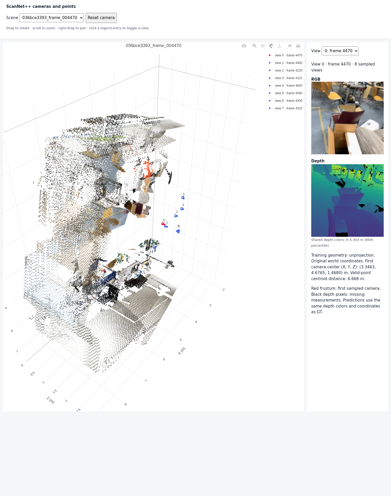
Canonicalization
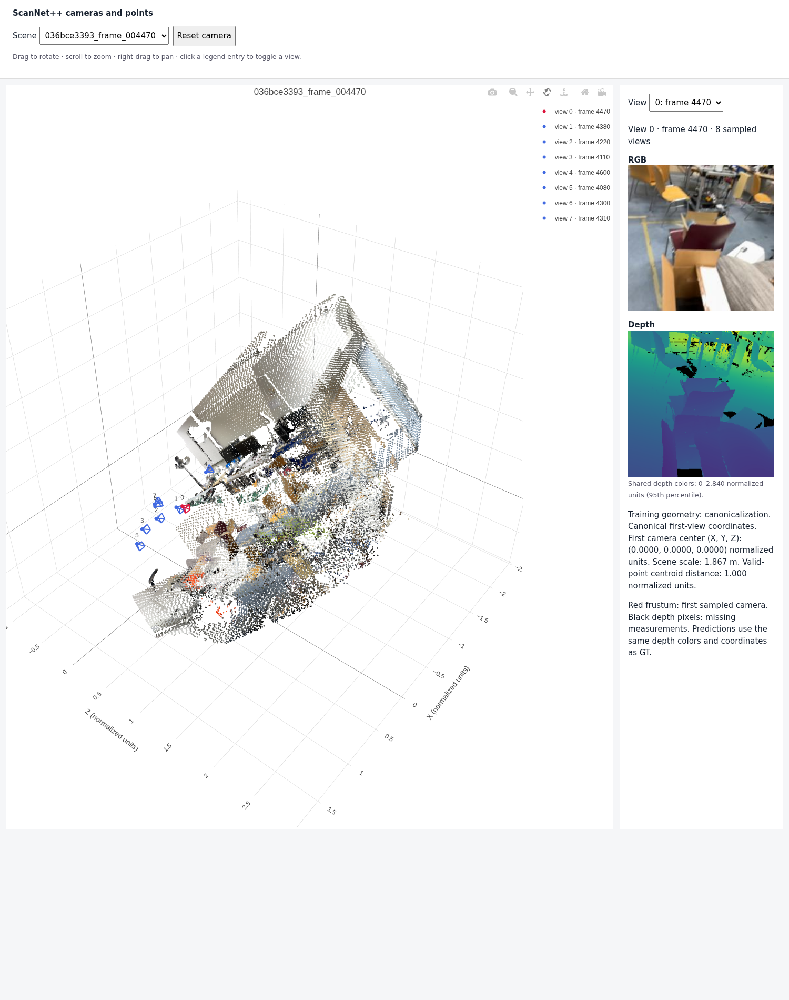
check_data.py output
split: train, dataset_samples: 224, checked_samples: 4 sample views res valid_depth max_reproj_err(px) max_ray_reproj_err(px) centroid_dist e050c15a8d_frame_007080 8 224 0.978 1.13e-4 1.09e-4 1.0000 5f99900f09_frame_002820 8 224 0.990 1.23e-4 1.11e-4 1.0000 47b37eb6f9_frame_002720 8 224 0.961 0.99e-4 0.89e-4 1.0000 4c5c60fa76_frame_006690 8 224 0.752 1.16e-4 1.07e-4 1.0000 tensor shapes: images [2,8,3,224,224], ray_directions [2,8,3,224,224], plucker [2,8,6,224,224]
Full JSON is in outputs/check_data.txt. All reprojection errors are ~1e-4 px (float32 round-off), well below 0.01 px.
Explanations
- Canonicalization. Absolute ScanNet++ poses and metric scale are arbitrary: they depend on where the scan started and on the room size. Re-expressing every camera relative to the first one (
T'i = T0-1 Ti, so camera 0 is the identity) removes the global rigid-transform ambiguity. Dividing translations, depths and points by the scene scale (distance from the camera-0 center to the valid-point centroid) removes the scale ambiguity. The network therefore always sees the same coordinate convention and a scale of about 1. This is also what makes predicting poses and depth from images well-posed, since images cannot reveal the absolute frame or metric scale. - World-space ray directions. For pixel (u, v),
K-1[u, v, 1]Tis the viewing direction in camera coordinates (OpenCV: +x right, +y down, +z forward). Rotating it by the camera-to-world rotation,d = normalize(R K-1[u,v,1]T), gives the direction in the shared world frame. The ray origin is the camera centert. Depth is z-depth, so the 3-D point isX = t + depth · R K-1[u,v,1]T(unnormalized direction). - Plücker moment. A ray is encoded as
[d, m]withm = o × d. The moment is the same for any pointoon the line, since(o + s d) × d = o × d. So(d, m)represents the line itself, independent of where the origin is placed along it.|m|is the distance from the world origin to the line, and the direction ofmis the normal of the plane containing the line and the origin. It gives a smooth, per-pixel 6-D encoding of camera pose + intrinsics, which is what the transformers consume.
Part 2. Novel-View Synthesis with Mini-LVSM
Decoder-only LVSM. Source views are patchified RGB (scaled to [-1, 1]) concatenated with Plücker rays, giving 9 channels. Target queries are patchified Plücker rays only, giving 6 channels. Both get a 2-D sin-cos position embedding. Each target view forms its own sequence [all source tokens, target tokens], which goes through 8 pre-norm transformer blocks (QK-norm). The target tokens are decoded by a linear head + sigmoid and unpatchified. The loss is pixel MSE.
Q2.1 Overfitting
Final overfit validation PSNR: 30.92 dB (SSIM 0.870).
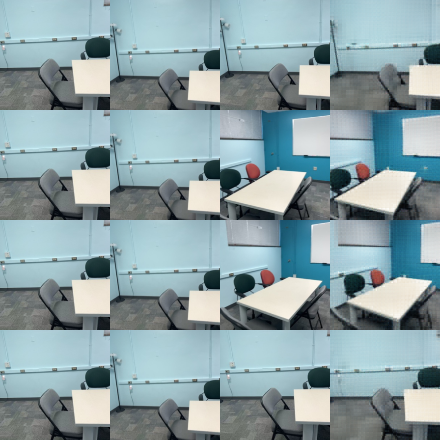
outputs/lvsm_overfit/val_epoch000.png. Columns: source views, ground truth, prediction.Q2.2 Training and evaluation
Training settings. These are the configs/lvsm.json defaults:
- Model: patch 8, d_model 384, 8 layers, head_dim 64, MLP ratio 4, QK-norm.
- Data: 2 source views + targets from the default data config, batch 4.
- Optimizer: AdamW, lr 2e-4 with β = (0.9, 0.95), weight decay 0.05, 200 warmup steps then cosine decay, grad-clip 1.0, bf16 autocast.
I first ran the default 100 epochs (0.7 h). The curves were still rising and validation loss was below training loss, a clear sign of underfitting. So the main model was trained for 400 epochs (2.7 h, one RTX 3090) with otherwise identical settings. Both runs are reported below; best.pt is selected by validation loss.
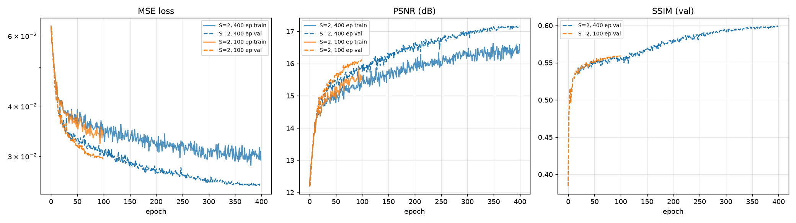
Validation metrics for the 400-epoch model, PSNR (dB) / SSIM:
| Source views | correct rays | shuffled rays | no rays (zeros) |
|---|---|---|---|
| 1 | 15.89 / 0.589 | 11.65 / 0.482 | 12.41 / 0.531 |
| 2 | 17.17 / 0.599 | 11.25 / 0.460 | 12.37 / 0.528 |
| 4 | 18.35 / 0.621 | 11.29 / 0.456 | 12.38 / 0.539 |
Default 100-epoch model, for reference:
| Source views | correct | shuffled | none |
|---|---|---|---|
| 1 | 15.19 / 0.558 | 11.80 / 0.487 | 12.47 / 0.529 |
| 2 | 16.13 / 0.560 | 11.49 / 0.472 | 12.43 / 0.528 |
| 4 | 16.87 / 0.575 | 11.58 / 0.473 | 12.44 / 0.538 |
Training visualizations (columns: source views, ground truth, prediction):
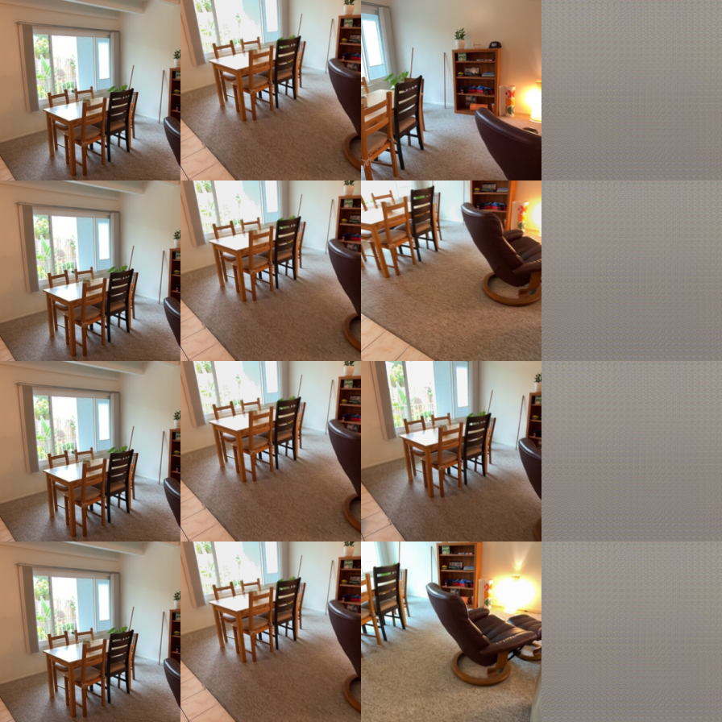
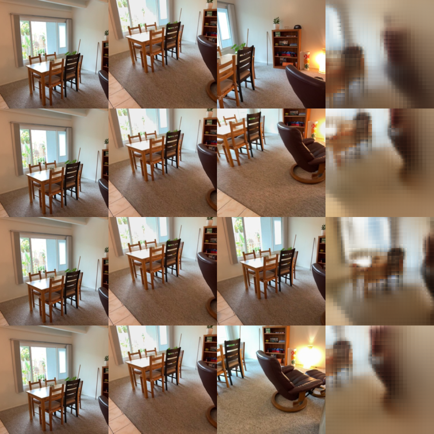
Evaluation visualizations (400-epoch model, columns: source views, ground truth, prediction):
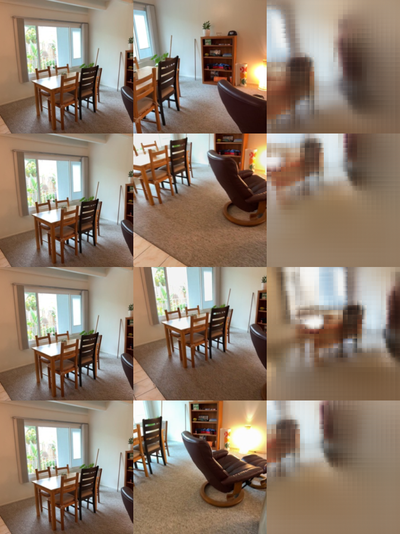
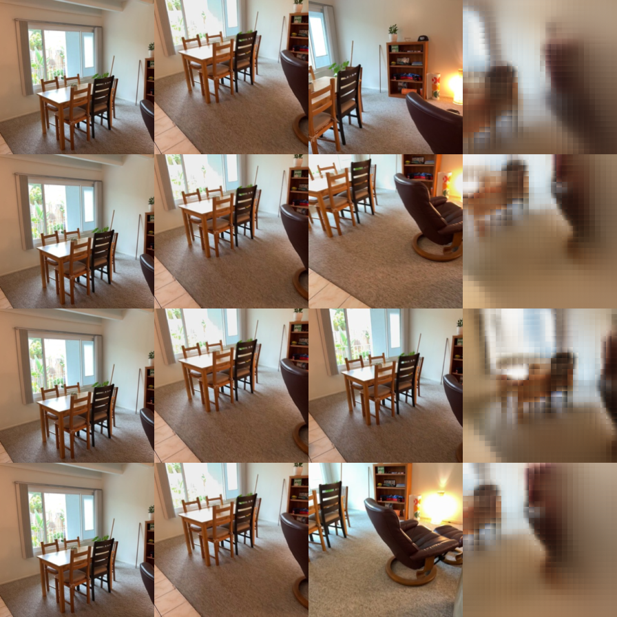
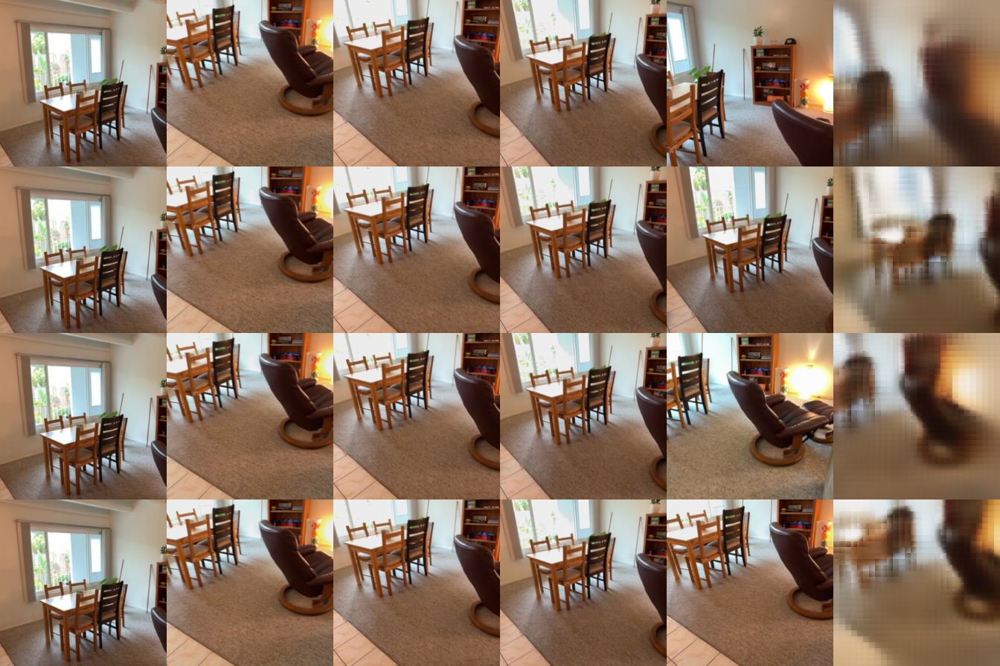
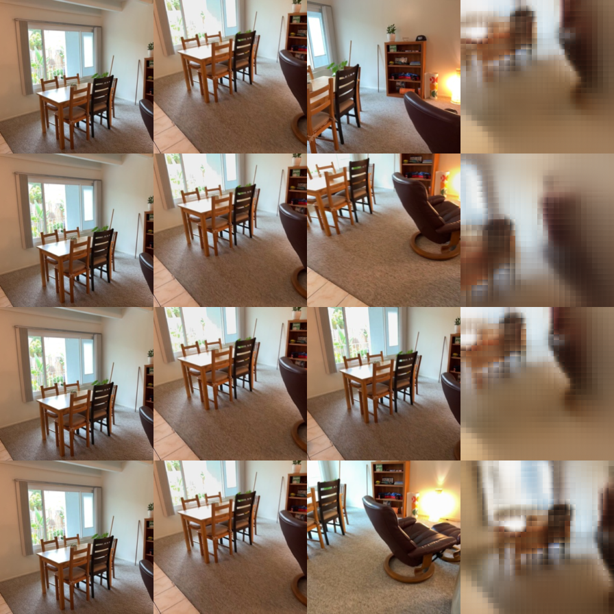
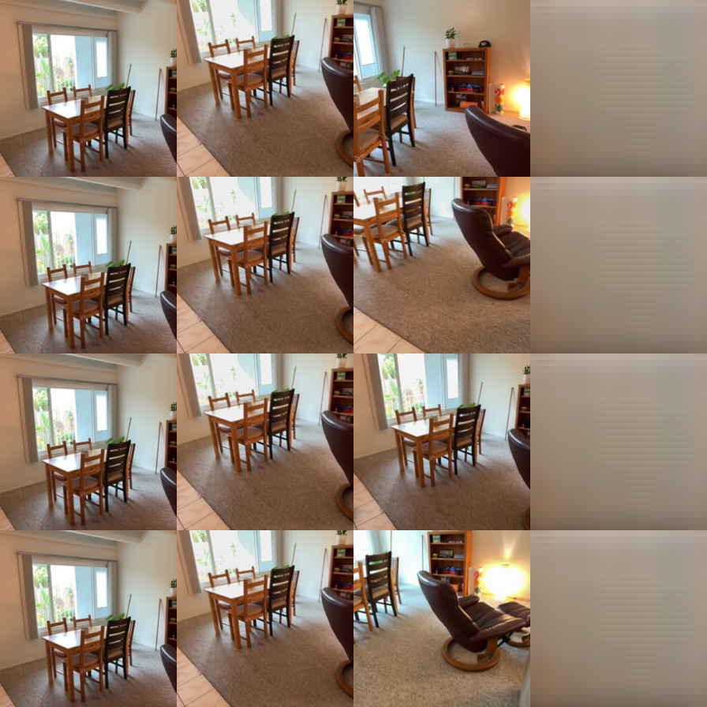
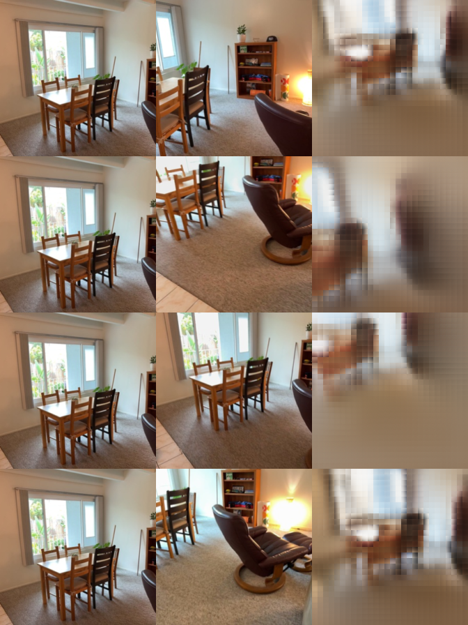
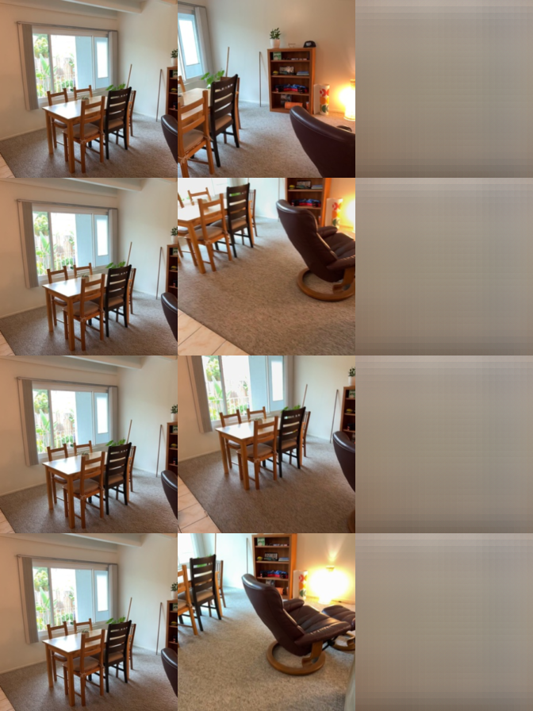
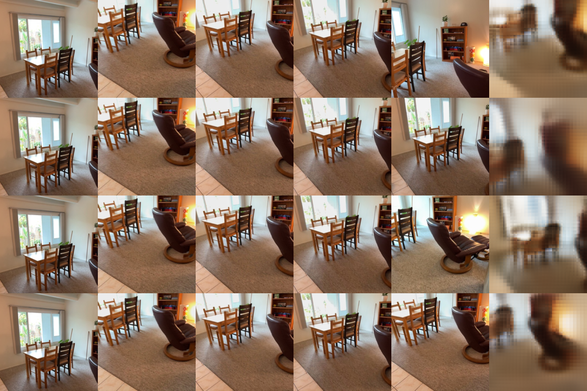
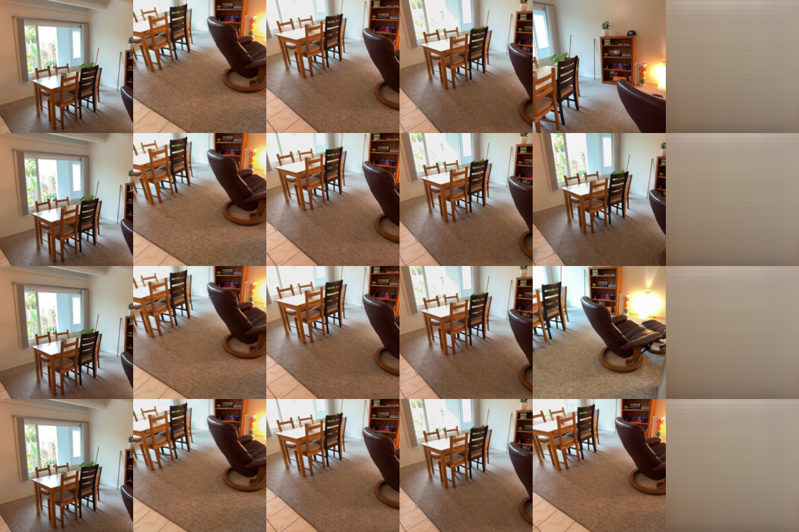
Discussion.
- Number of source views. More source views help monotonically: 15.9 → 17.2 → 18.3 dB for 1 → 2 → 4 views, even though the model was trained with only 2. More views cover more of the target's visible content and constrain geometry better, so the model interpolates rather than hallucinates. Attention over a variable-length set of source tokens generalizes to a different number of views without retraining.
- Ray conditioning. Removing the target rays (zeros) drops PSNR by about 5–6 dB. That output does not depend on the number of source views at all (≈12.4 dB everywhere): without knowing where the target camera is, the model can only output a blurry "average view" of the scene. Shuffled rays are even worse than none (11.3 dB, lowest SSIM), because the model confidently renders the scene from the wrong viewpoint. Together these show that the model really uses the Plücker target rays to choose the viewpoint, rather than copying a source image.
- Quality. Predictions get the coarse layout, colors and large objects right at the correct place, but are blurry with visible 8×8 patch artifacts. This is expected for a small model (≈15M parameters) trained for a few GPU-hours on 224 training sequences with an MSE loss: MSE averages over uncertainty. Longer training was still improving (curves not converged), so more compute or a perceptual/SSIM loss would sharpen results.
Q2.3 Bonus: training view count
Question. How does the number of source views used during training affect evaluation with 1, 2 and 4 source views?
Setting. This is a controlled comparison: three models with identical settings (default config, 100 epochs, same seed and schedule). Only num_source_views changes during training (1, 2 or 4). Each model is evaluated on the same validation set at S = 1, 2, 4 with correct rays.
| Train S \ Eval S | 1 | 2 | 4 | train time |
|---|---|---|---|---|
| 1 | 15.12 / 0.559 | 14.90 / 0.553 | 14.64 / 0.561 | 0.52 h |
| 2 | 15.19 / 0.558 | 16.13 / 0.560 | 16.87 / 0.575 | 0.68 h |
| 4 | 15.31 / 0.556 | 16.41 / 0.562 | 17.45 / 0.580 | 0.87 h |
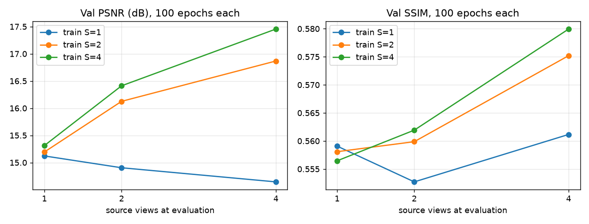
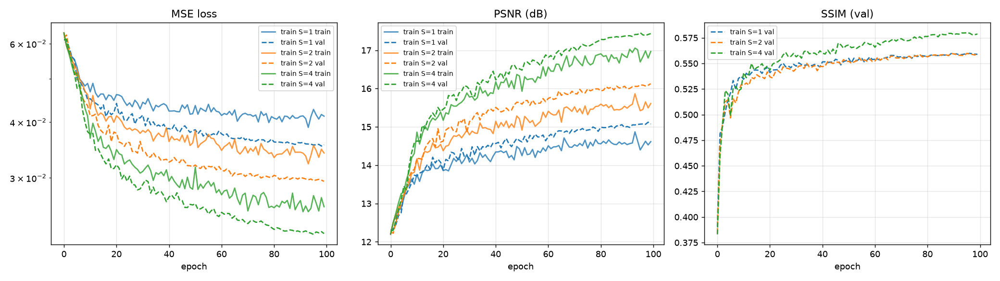
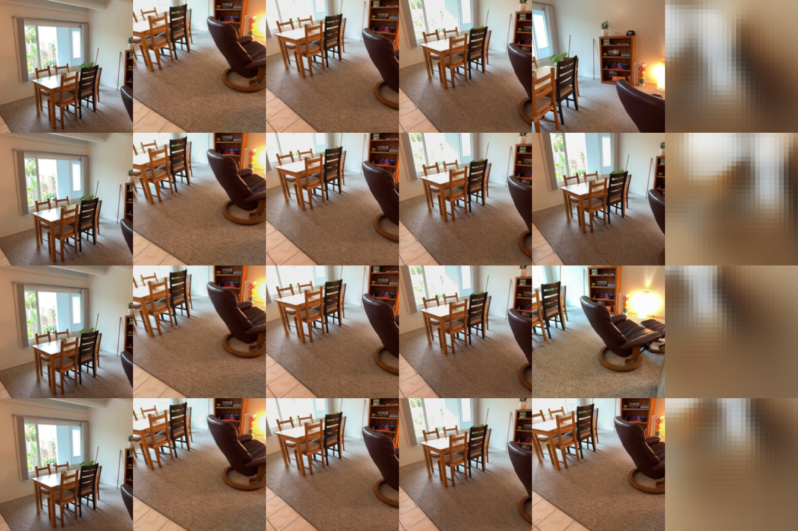
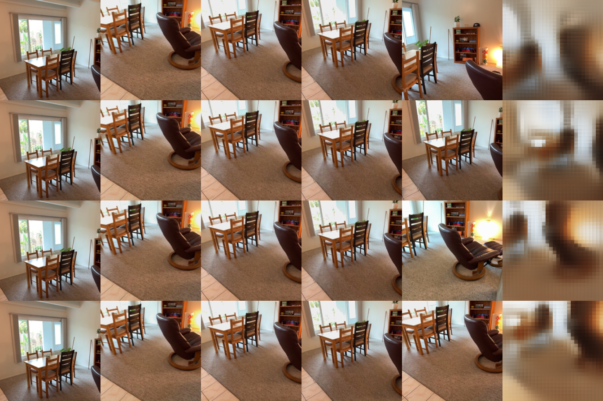
Findings.
- The model trained with one view cannot use extra views: its PSNR even drops from 15.1 to 14.6 dB as views are added. It never learned to fuse information across source views, so extra source tokens only act as distractors.
- Training with ≥2 views teaches cross-view fusion, which then extrapolates to more views.
- Training with 4 views is best at every evaluation count, including S=1 (+0.1–0.6 dB over S=2). Each step gives a stronger multi-view geometric signal, and the target is usually well covered, so the gradients are informative rather than "hallucinate unseen content".
- The cost is a longer sequence: the S=4 model trains about 1.3× slower than S=2 for the same epochs.
Limitations. These are 100-epoch runs (all still underfitting), with one seed each. The gaps at S=1 (≈0.2 dB) are within run-to-run noise. A random number of views per step was not tested, but would likely combine the S=1 robustness with the S=4 fusion ability.
Part 3. Cameras and Depth with Mini-VGGT
Architecture:
- Encoder: frozen DINOv2 ViT-B/14 patch features, projected to 384-d, plus per-view camera and register tokens.
- Aggregator: 8 alternating attention pairs. Frame attention runs within each view; global attention runs across all tokens of all views. The frame and global outputs of the final pair are concatenated.
- Camera head: predicts a 9-d pose encoding per view (translation, quaternion, FoV).
- Depth head: a DPT-style dense head with RGB refinement predicts log-depth and a confidence.
Losses:
- Camera: L1 on translation, quaternion and FoV.
- Depth: confidence-weighted regression (trimmed mean of
c·|Δ| − 0.2·log c), plus a gradient-matching term.
Q3.1 Overfitting a single scene
After 40 epochs on one scene, camera loss is 0.0026. The total loss becomes negative (−0.15) because of the −log(confidence) term. Predicted geometry matches GT; the predicted centroid distance is 0.999.
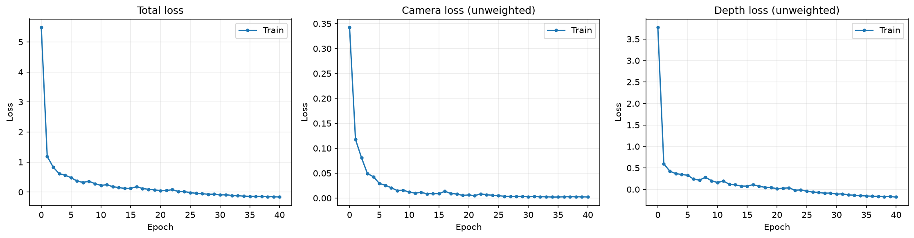
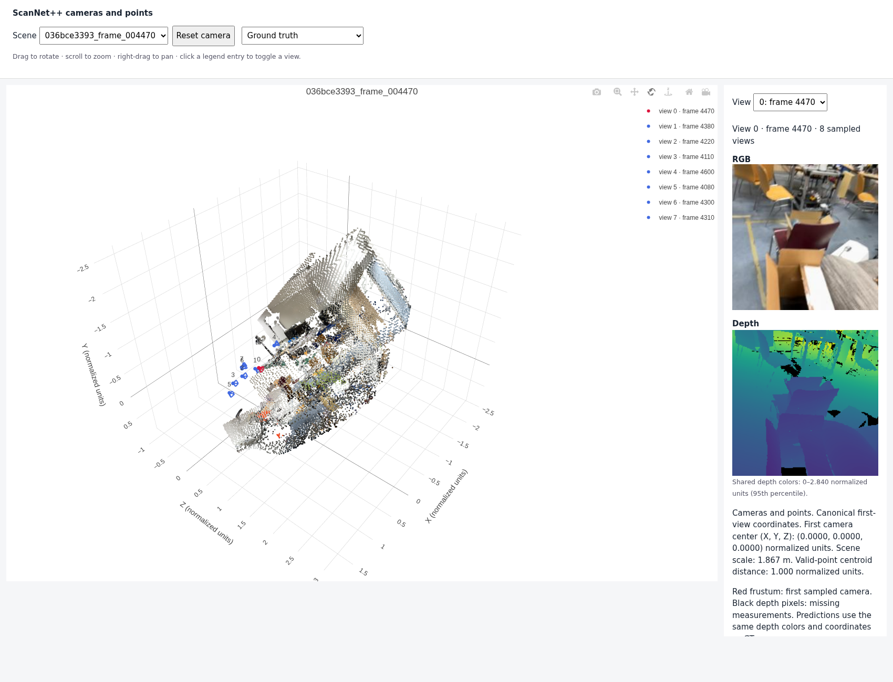
Q3.2 Training and evaluation
Training settings. These are the configs/vggt.json defaults:
- Data: 8 views sampled within a 32-frame range, 224 px, batch 16.
- Model: embed 384, 6 heads, 8 layers, frozen DINOv2 ViT-B/14.
- Optimizer: AdamW, lr 6e-4, weight decay 0.01, 10 warmup epochs, cosine decay to 0.05×.
- Loss weights: camera 5, depth 1.
- Schedule: 1000 epochs (14 steps each, 224 training sequences), bf16, one RTX 3090, 4.4 h. The best checkpoint (by validation loss) is from epoch 911.
Evaluation uses 8 views from the first 32 prepared frames, 224 px, seed 825, on the full splits.
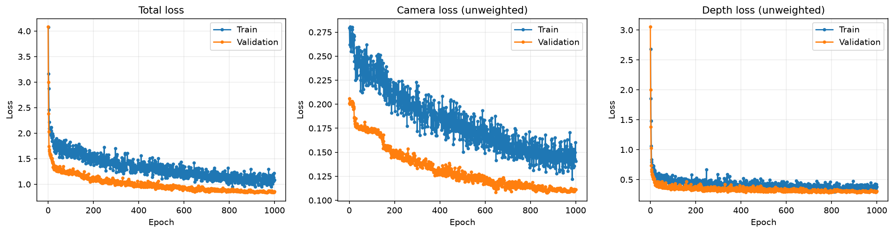
| Split | AbsRel ↓ | δ1 ↑ | Rotation AUC ↑ | Translation AUC ↑ | Joint pose AUC ↑ | ||||||
|---|---|---|---|---|---|---|---|---|---|---|---|
| @5 | @15 | @30 | @5 | @15 | @30 | @5 | @15 | @30 | |||
| val | 0.154 | 0.814 | 0.245 | 0.567 | 0.735 | 0.025 | 0.085 | 0.196 | 0.011 | 0.072 | 0.180 |
| test | 0.167 | 0.770 | 0.213 | 0.536 | 0.716 | 0.014 | 0.054 | 0.157 | 0.004 | 0.034 | 0.137 |
Each split has 28 samples and 784 pose pairs, with no degenerate pairs. Mean rotation error is 11.3° (val) / 10.1° (test); mean translation-direction error is 42.2° / 42.9°.
GT vs prediction on four validation scenes (left: GT camera + depth, right: predicted camera + depth):
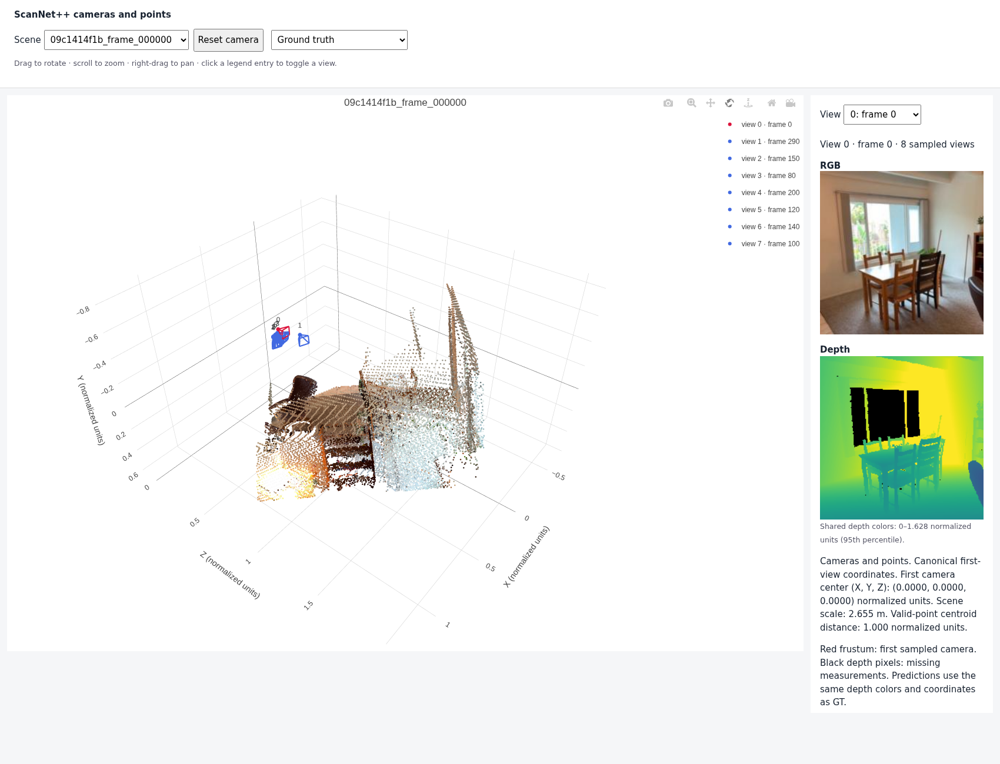
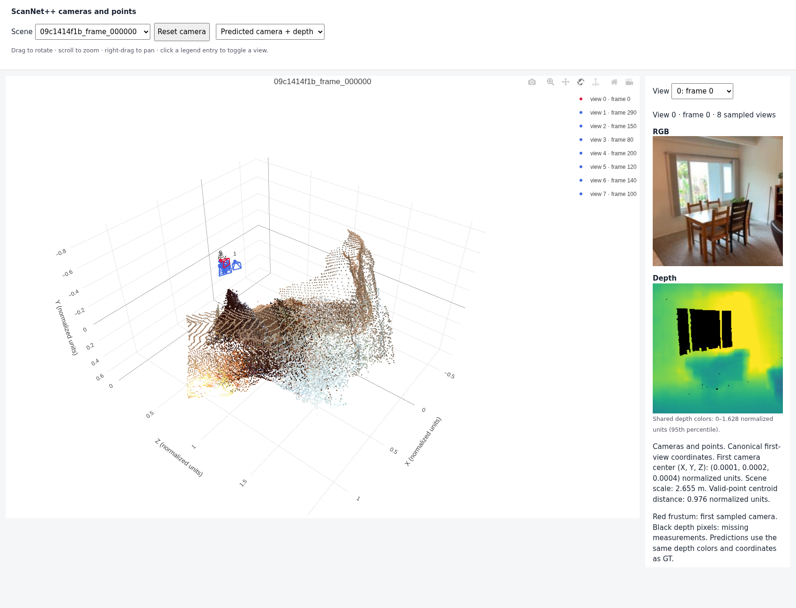
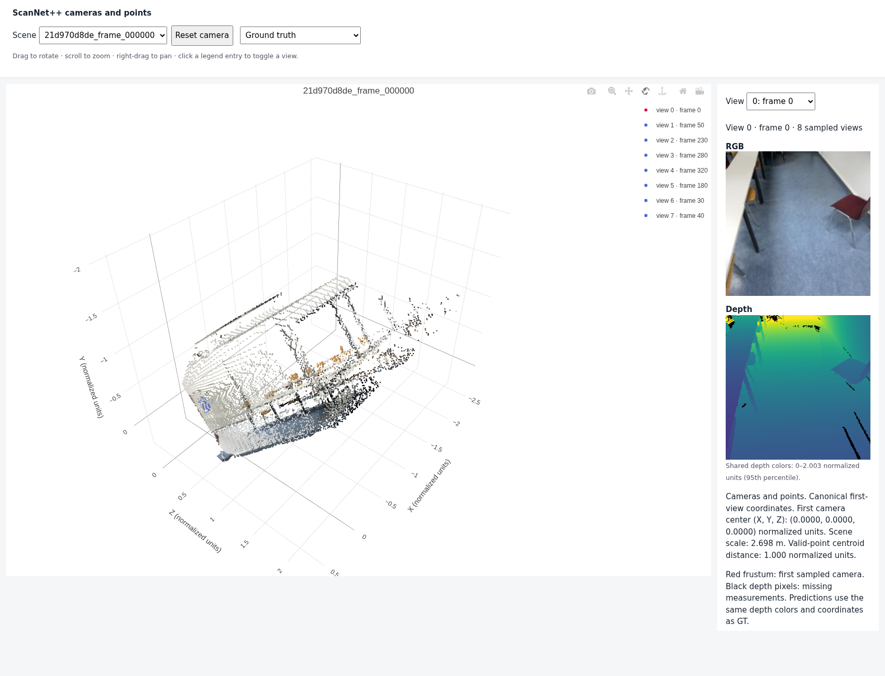
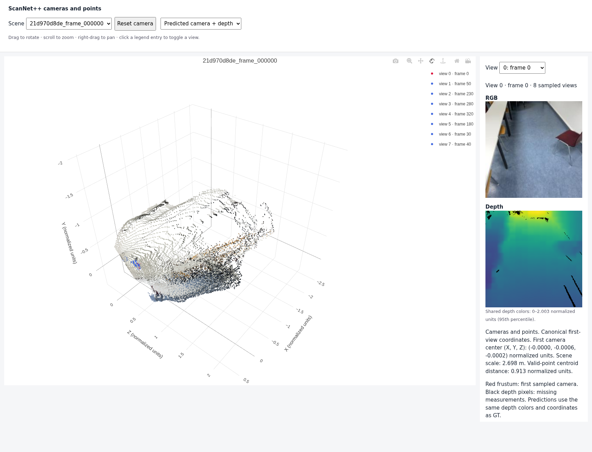
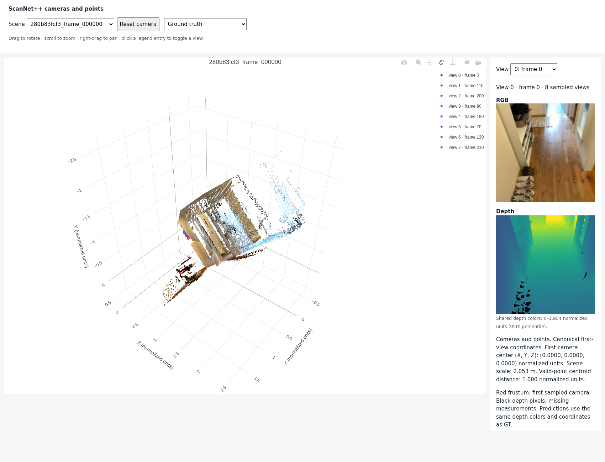
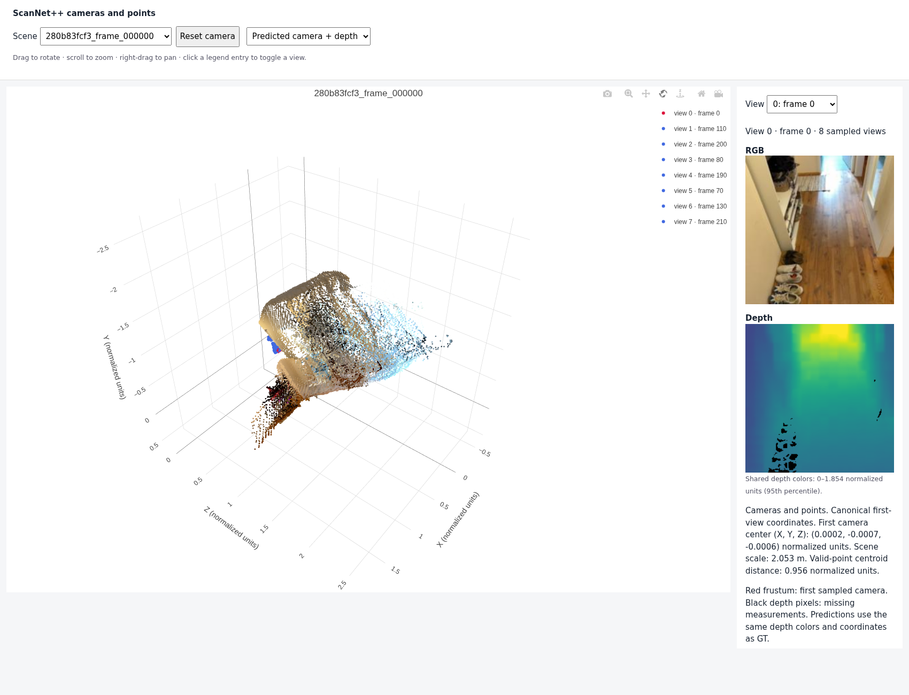
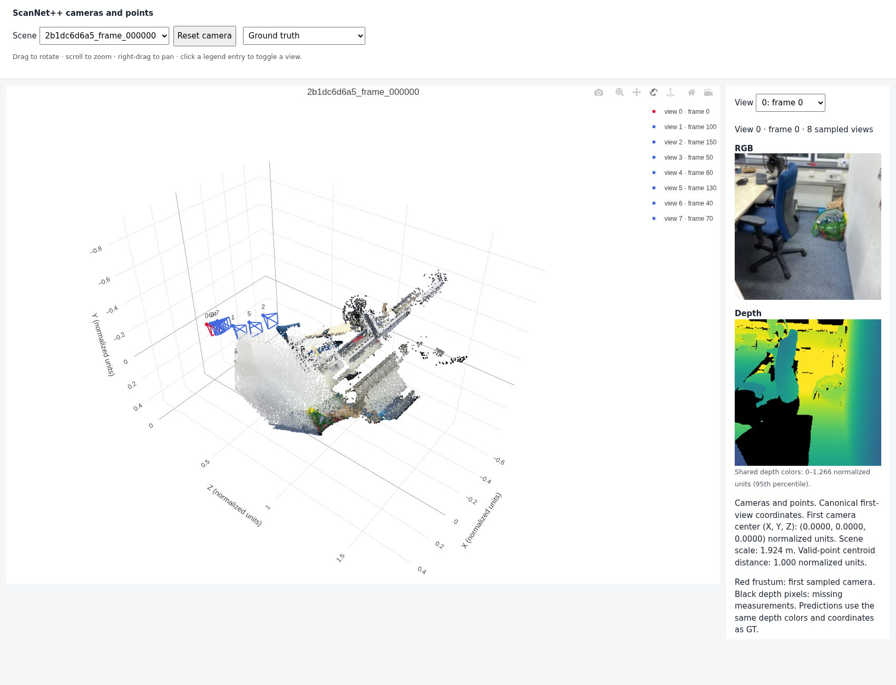
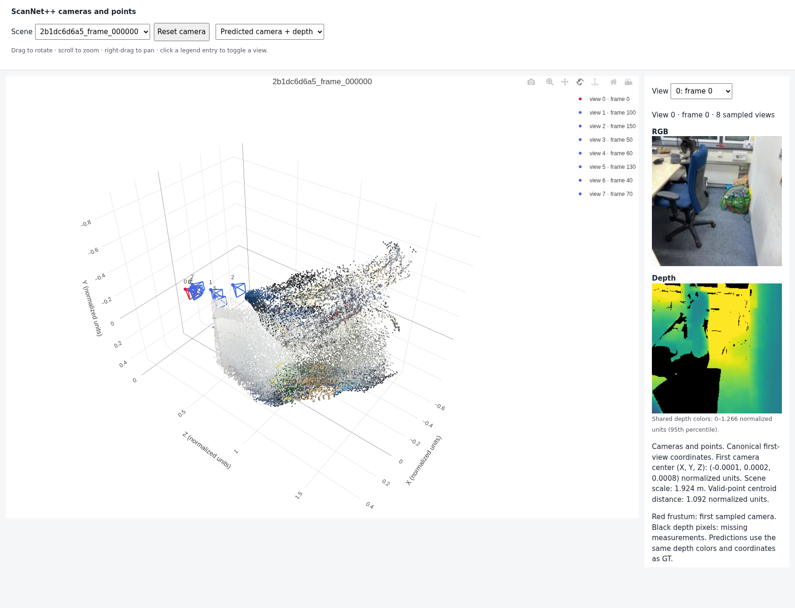
Discussion of held-out errors.
- Depth is good. δ1 is 0.81 / 0.77 and AbsRel 0.15 / 0.17. Predicted point clouds recover the room layout (floor, walls, furniture) and the depth maps are smooth with correct ordering. The main errors are over-smoothed depth discontinuities: in scene 0 the table and chairs merge into one blob, and thin structures such as chair legs and backs disappear. Depth benefits from the strong frozen DINOv2 features, which carry a lot of monocular depth information.
- Rotation is reasonable. 73% AUC@30 on val, 11° mean error.
- Translation direction is the weak point. AUC@30 is only about 0.2, and since joint pose AUC takes the worse of the two errors, it is limited by translation. Several factors contribute:
- Frames come from 32 consecutive iPhone frames, so baselines are small relative to scene depth (all frusta sit in a tight cluster in the screenshots). The translation direction of a short baseline is ill-conditioned: a small absolute error becomes a large angular error.
- The model has to infer it from parallax.
- Only 224 training sequences are available. Val camera loss was still slowly decreasing at epoch 1000, so more data or compute should help.
- Generalization. Test is slightly worse than val for depth and pose, consistent with distribution shift across rooms. Training loss stays above validation loss because training samples random frame subsets, while evaluation uses a fixed, easier subset; it does not mean the model is underfit.
Q3.3 Bonus: number of input views
Question. How does the number of input views affect accuracy, runtime and memory?
Setting. The trained model (8 views) is evaluated on the val split with 2, 4, 8 and 16 views drawn from the first 32 prepared frames (same seed 825, 224 px). Latency and peak memory are measured for one forward pass (batch 1, bf16, RTX 3090, averaged after warm-up) for 2–32 views.
| Views | AbsRel ↓ | δ1 ↑ | Rot AUC@15 | Rot AUC@30 | Trans AUC@30 | Pose AUC@30 | pairs |
|---|---|---|---|---|---|---|---|
| 2 | 0.117 | 0.857 | 0.600 | 0.746 | 0.229 | 0.187 | 28 |
| 4 | 0.137 | 0.851 | 0.548 | 0.717 | 0.186 | 0.157 | 168 |
| 8 (train) | 0.154 | 0.814 | 0.567 | 0.735 | 0.196 | 0.180 | 784 |
| 16 | 0.185 | 0.755 | 0.516 | 0.706 | 0.167 | 0.148 | 3360 |
| Views | 2 | 4 | 8 | 16 | 24 | 32 |
|---|---|---|---|---|---|---|
| ms / forward | 25.8 | 27.0 | 25.5 | 41.4 | 60.1 | 83.8 |
| ms / view | 12.9 | 6.8 | 3.2 | 2.6 | 2.5 | 2.6 |
| peak memory (GB) | 0.74 | 0.76 | 0.80 | 0.89 | 0.97 | 1.05 |
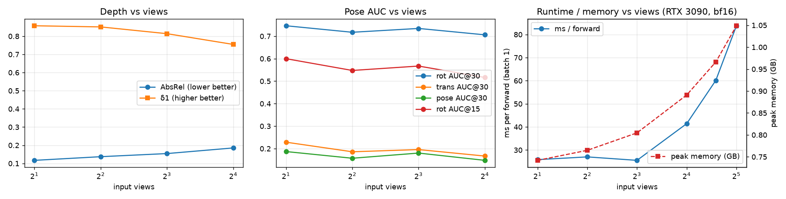
Findings.
- More views do not help this model; depth gets steadily worse. AbsRel rises from 0.117 to 0.185 for 2 → 16 views. Pose AUC is roughly flat with a slight downward trend.
- Train/test mismatch. The model was only ever trained with 8 views. With 16 views the global attention spreads over twice as many tokens, a distribution it never saw. Each view's depth is then contaminated by more weakly-related tokens.
- Different difficulty per setting. More views inside a fixed 32-frame window means more pairs, including wider-baseline pairs that are harder for pose. With 2 views, the depth metric is dominated by the reference view and its nearby frame.
- No multi-view benefit for depth. Depth is mostly predicted monocularly from DINO features, so extra views add little.
- Runtime and memory are cheap at this scale. Up to 8 views the forward pass is launch-overhead bound (≈26 ms). Beyond that latency grows roughly linearly, as the frozen DINOv2 encoder (per-view cost) dominates. The quadratic global attention over 256·V tokens is still small at V ≤ 32. Per-view cost falls from 12.9 ms to 2.6 ms, and peak memory grows only from 0.74 to 1.05 GB, mostly the DINOv2 weights.
Limitations. This is evaluation-time only. Training with a random number of views (e.g. 2–16) would probably remove the degradation at 16 views, and would be the natural next experiment. The metrics with different view counts are computed over different pair sets, so they are not strictly comparable.